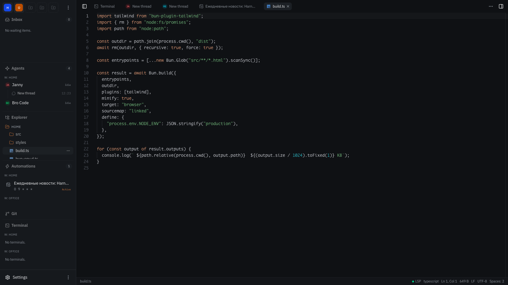

Harnesys runs AI agents in real folders on your machine. Chat wakes them, schedules and webhooks put them to work, and a built-in IDE keeps their tools close. Agents, threads and memory stay on your disk.
The desk. Workspaces and agents on the left, a thread in the middle, model, instructions and skills on the right.
How it works
RUN 01
Create a workspace
Point Harnesys at a folder — it becomes a workspace with its own agents, threads and automations. Settings and memory stay with it, not with some account.
RUN 02
Pick or draw an agent
Start from ten presets: assistant, coder, researcher, orchestrator and six more. Or compose your own on a visual graph — model calls, tools, forks, waits — with budgets on steps, tokens and wall-clock time.
RUN 03
Put it to work
Talk in a thread, or let cron and inbound webhooks fire runs on their own. Long jobs show a live plan; anything irreversible stops and asks — answers land in the Inbox, and a run can wait up to seven days.
What's inside
Agents and teams
Agents spawn sandboxed subagents, hand threads to each other and fan work out to 32 parallel workers. Children inherit the strictest of their parent's permissions, so a wide fan-out stays quiet and reviewable.
Real tools, fenced
File read and edit, shell with allow-lists and timeouts, HTTP, web search, language-server diagnostics, plans, memory. Every call shows in the transcript; .env, .ssh and key files are off-limits by default.
You stay in charge
Permissions are per operation — fs.read, fs.write, process, network, mcp, agents — each set to allow, ask or deny. Five preset modes from ask to bypass. Irreversible steps wait for your answer.
Permission askshell
rm -rf dist && bun run build
Allow onceAlways for this workspaceDeny
Automations
Schedules are cron entries that fire a run into a thread; webhooks are URLs that wake an agent from the outside. Both get a run journal, pause and resume — and the agent can set them up itself.
A daily news schedule, cron 0 9 * * *, targeting an agent, with the run journal underneath.
Memory that carries
Pin up to 32 standing rules, keep semantic facts between threads, search every past thread, and index document folders for answers with citations — hybrid full-text and vector search.
A real IDE inside
File explorer with git status, Monaco editor, diffs, branches and commits, PTY terminals with scrollback, live LSP diagnostics — all next to the chat, no second app.

The editor: Monaco with LSP status in the bottom bar, git and terminals in the same window.
Any model, your keys
Twenty drivers: OpenAI, Anthropic, Google, OpenRouter, Groq, Mistral, xAI, Ollama and more. Model discovery pulls pricing and capabilities; keys sit in the macOS Keychain and never reach the client.
Spend you can see
A context ring shows the window filling; every turn reports tokens, cache and cost in dollars. Long threads compact with /compact.
↑ 1,204 tok↓ 8,412 tokcache 92%$0.004112.4s
Plugins, skills, MCP
Install Claude Code plugins and Agent Plugins 1.0 from marketplaces, git or npm. Skills appear in a catalog; MCP servers plug in through a Cursor-compatible .mcp.json; 37 hook events wire them together.
Many desks, one window
Several workspaces and several hosts side by side. Pair a second machine with a code and keep both desks in one browser window.
Install
Three tracks, same destination. Pick the one that matches how you work today — switching later costs nothing. In a hurry: First desk, Power user, Server.
A
First desk
You have used a browser. The terminal only needs two pastes.
Install the binaries.
shell
curl -fsSL https://github.com/harnesys/studio/releases/latest/download/install.sh | sh
You should see: harnesys, harnesys-host and harnesys-web land in ~/.local/bin.
Start the desk.
shell
harnesys up --with-ui
You should see: a ready line and the address http://localhost:3000.
Open that address, add a workspace (any folder will do), and paste an API key from OpenAI, Anthropic or OpenRouter.
You should see: the assistant preset answer in a new thread.
To stop: harnesys down. To check on it later: harnesys status.
B
Power user
You live in a terminal and want the whole desk: IDE, git, skills, MCP.
Install and start as in track A, then keep an eye on the log.
shell
harnesys logs -f
Open the workspace in the IDE: explorer with git status, Monaco editor, diffs, branches and PTY terminals — no second app needed.
Teach your agents: create skills from the UI, install plugins from marketplaces (Claude Code format works as-is), attach MCP servers through a Cursor-compatible .mcp.json.
Automate: add cron schedules and webhooks yourself, or let the agent do it — the scheduler and webhook tool packs are first-class.
Watch spend per turn, compact long threads with /compact, fork a thread when an experiment goes well.
C
Server
You run services on a VPS and reach them from anywhere.
One flag keeps it running across reboots — it writes harnesys-host.service and harnesys-web.service as user units.
shell
harnesys up --install-systemd
Or Docker: the host and web images share a data volume and pair themselves.
Open port 8080 and log in with the host token. Pair another machine with harnesys host pair and keep both desks in one window.
TLS: a private network via Tailscale or WireGuard, or Caddy/nginx in front of the web service — disable proxy buffering for the SSE route. Details in docs/deploy.md.
Update in place: harnesys update pulls the latest release for your OS and architecture.